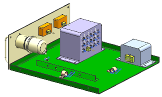
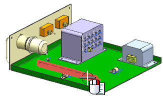
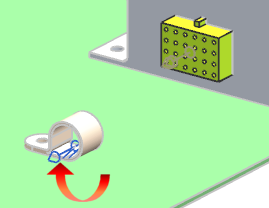

Open rte1_drawer_assm_3.

Right-click the bulkhead component and choose Hide.

Make rte1_drawer_harness_3 the Work Part.
Zoom in on the area of the 24–pin connector and the clamp on the base of the drawer.

Notice that the clamps in this assembly display a fixture port at a stock offset point similar to the one you created in Lesson 2.